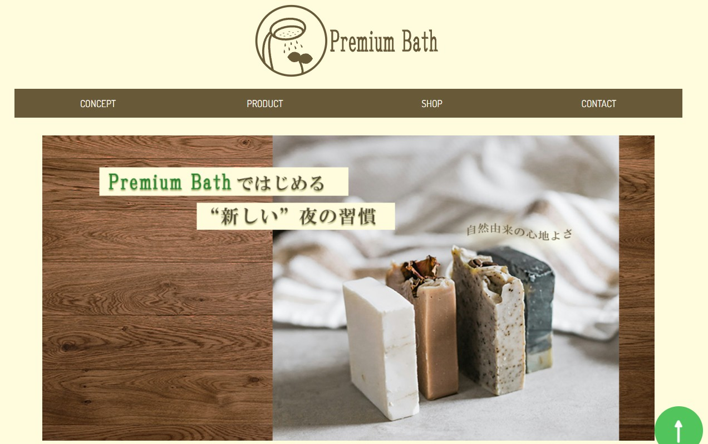
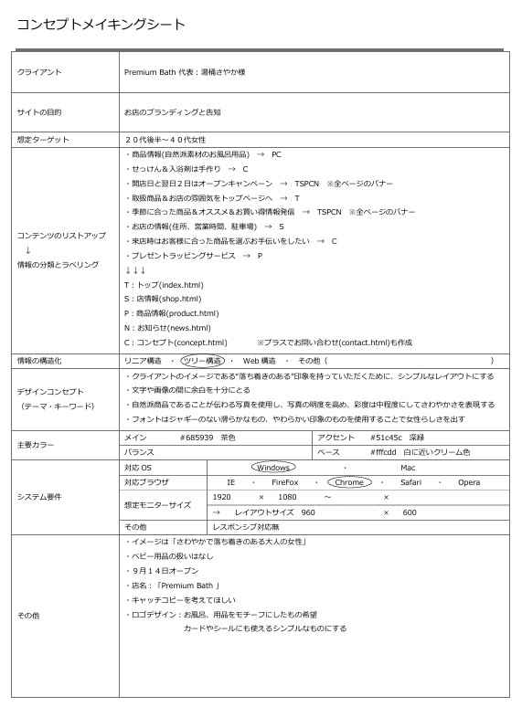
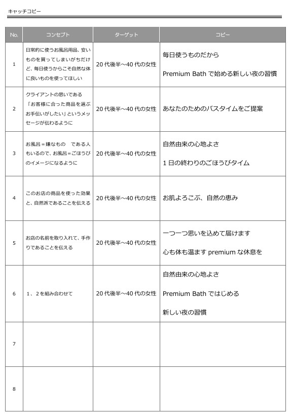
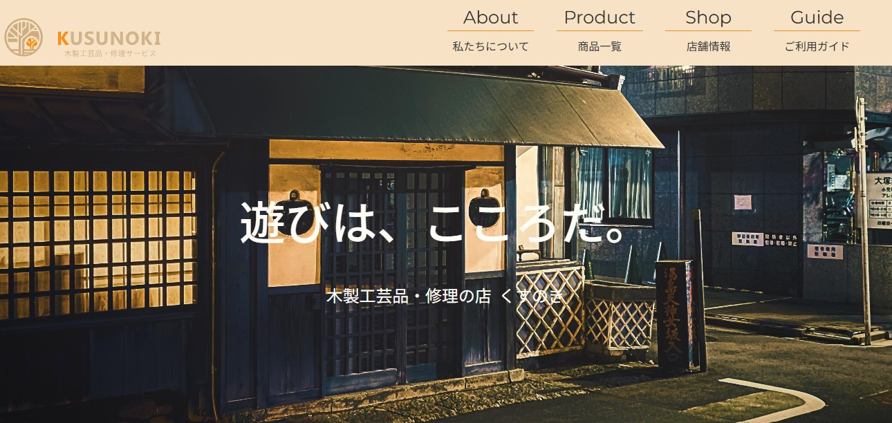
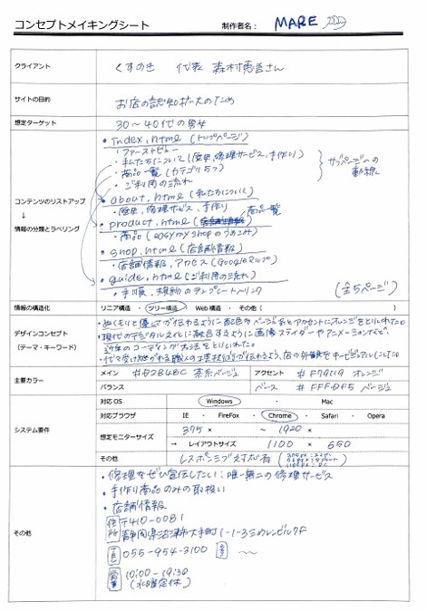
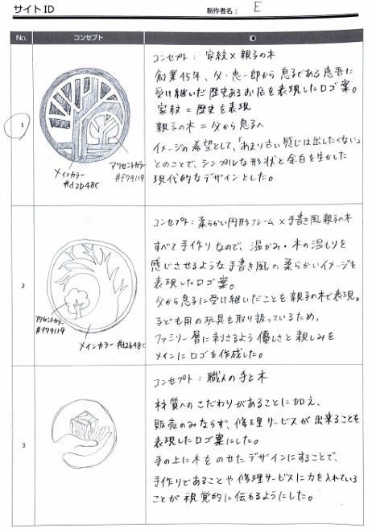
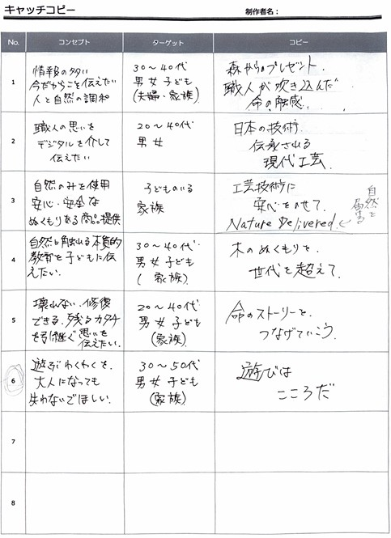

WEB SITE
PremiumBath
職業訓練の個人製作実習にて製作した架空のお風呂用品店のWEBサイトです。
お店のブランディングと告知を目的、ターゲットを20~40代女性としています。自然派商品を取り扱っていることから、サイト全体も自然な色合いにし、大人で落ち着きのある雰囲気を目指しました。

設計書など


くすのき
職業訓練のグループ製作実習にて製作した、架空の木製工芸品店のWEBサイトです。
4人グループにて製作し、私は全体のベースページ(メニューバーやヘッダーフッターなど)とSHOPページの製作を担当しました。
配色やキャッチコピーに関してはグループで話し合いながら決めました。

設計書など


